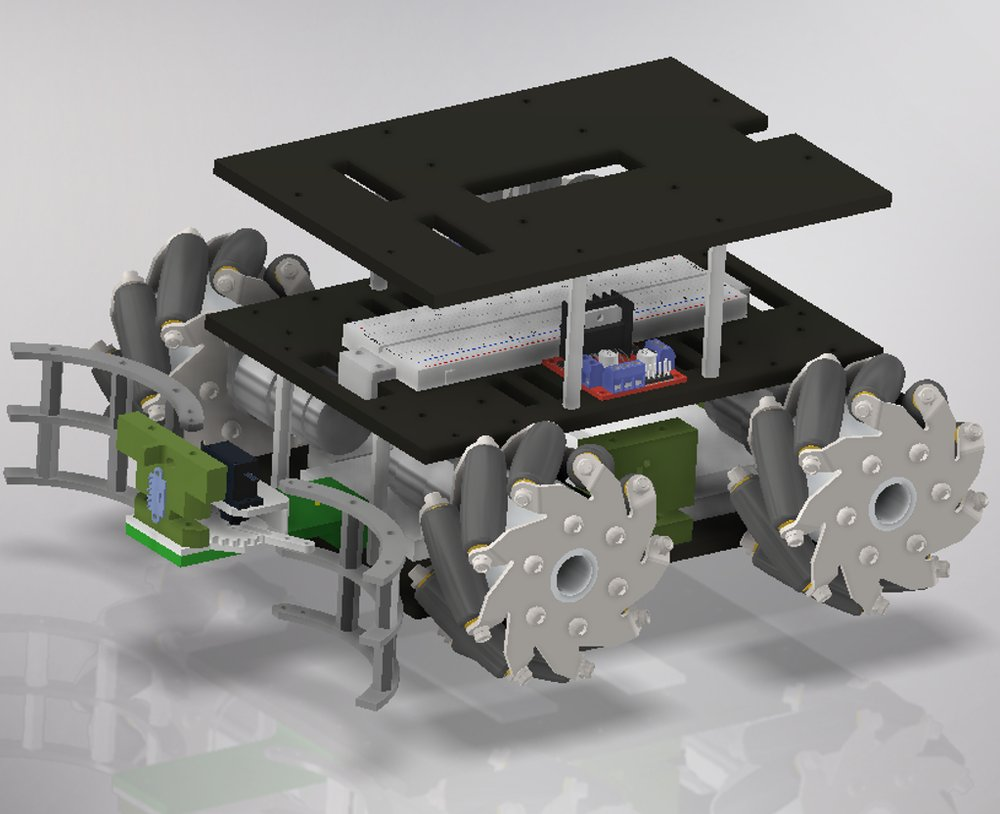
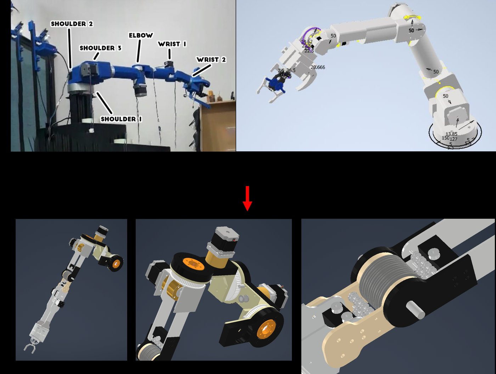
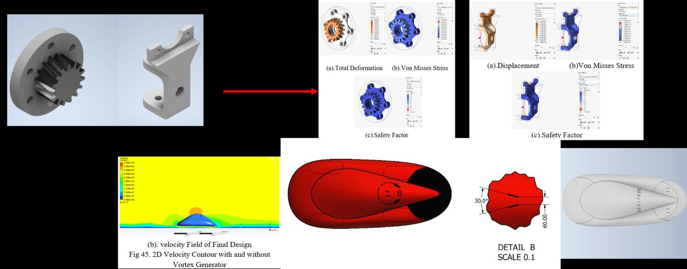

Earlier work
Mechanical and mechatronics projects from coursework and my undergraduate studies.
4-Wheeled Mecanum Drive Mobile Base

- WiFi-based control and localisation on an ESP32.
- I2C for the sensors and ESP-NOW for board-to-board communication, cutting physical connections in the electrical assembly by 80%.
- Design drawings and manufacturing files in SolidWorks, Autodesk Inventor and DraftSight.
Soft Actuator and Variable Stiffness Link
Rigid robots are precise but unsafe around fragile objects and people. I modified a pneumatic silicone actuator, originally developed at Harvard as a grasping mechanism for hand rehabilitation, to produce more force so it could drive an elbow mechanism. A variable stiffness link lets the stiffness of the system be adjusted as needed.
- 9 N of lifting force at 37 kPa.
- Up to 3× stiffness when the link is stiffened, compared with its relaxed state.
Cable-Driven Teleoperated Robot Arm

- A cable drive lowers the arm's moment of inertia by moving the motors close to the shoulder.
- Less material on the lower arm, so the whole arm is lighter.
- A pulley mechanism at the elbow increases torque by 20×.
Shell Eco-marathon Virtual Off-track 2021

- Improved fuel efficiency by reducing component weight and optimizing the flow around the car.
- Topology optimization cut component mass by 54% on average.
- Vortex generators for passive flow control reduced drag by 14.74%.
High-Torque, Self-Recharging Conversion E-Bike
- A mountain bike conversion with a pinion and pulley system that increases torque by 8.75×.
- Charges from the rotation of the wheel, with a knockdown system for easy fitting and removal.
- Best Presenter at INSITEF 2022.